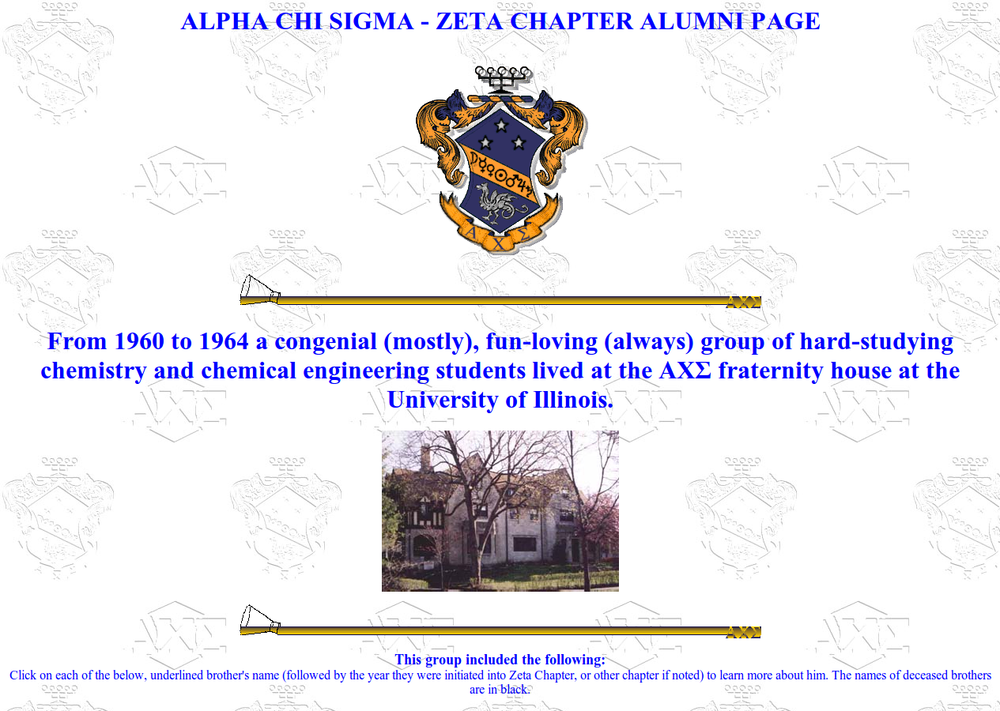
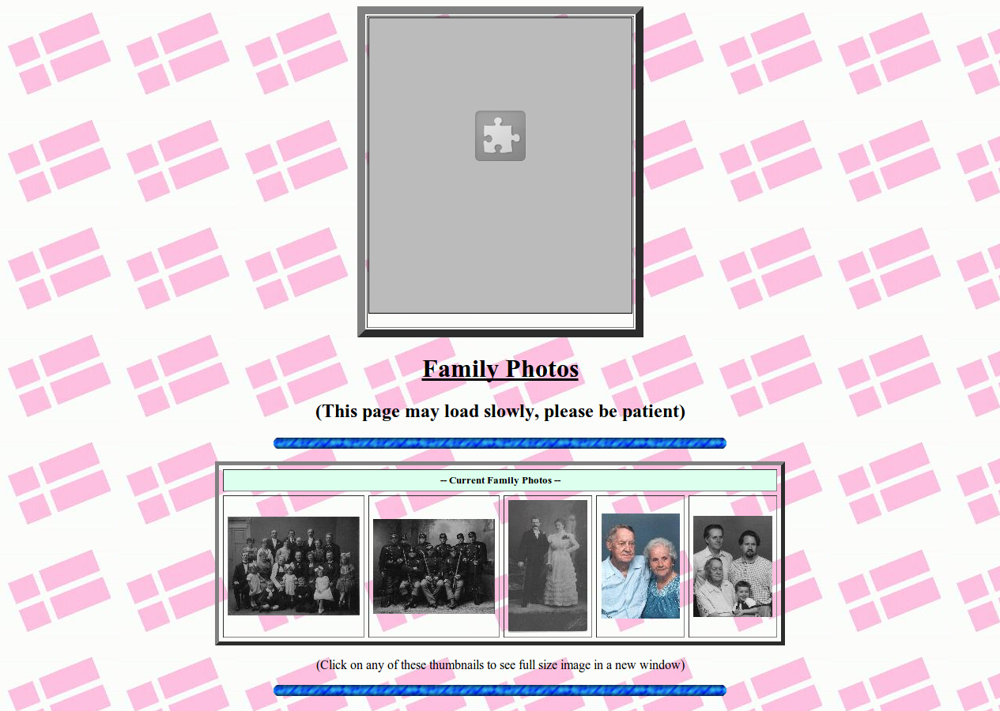

Personal Information
I am a 74 year old proud father of 4 (two sons and two daughters), step-father of 1 step-daughter*, and very proud grandfather of 7 grandsons*, and 3 granddaughters. I am married to a lovely lady named Penny; we moved from near the coast north of San Diego, California, and now live in Sun City West, AZ. The flag of Denmark in my background is my way of proclaiming my pride in my Danish heritage. Both of my paternal grandparents came to America from Denmark, approximately 110 years ago. The U.S. flag waving at the bottom of the page demonstrates my pride in my American citizenship!* - In addition, we have lost two grandsons. Joshua Adam Healey died in 1991 of Sudden Infant Death Syndrome (SIDS) at the age of 4 months. More recently, Robert Morales Polanco III was at school when his heart stopped; he was 9 days short of becoming 12 years old, possibly as a result of "long QT Syndrome." And two days short of a month later, we lost Jeni Horner, my 33 year old step-daughter, mother of two of the grandchildren above.

AXΣ Meetup Page

Family Photos
Education and Vocation
If you are interested in my educational background and my vocation, please check out this page.Advocations - Genealogy
If you share my interest in genealogy, please check out my genealogy pages.Lapidary
If you share my interest in lapidary, please check out my lapidary page.Check out my unusual corporate necktie collection here.